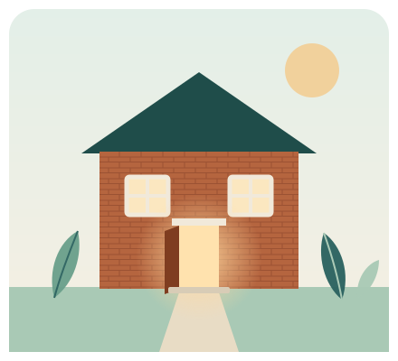

Homeless veterans
A veterans-only home near the VA, help securing the benefits veterans have earned, and the camaraderie of a household that understands service.
SOLACE turns empty houses into homes for homeless veterans and other people in need of transitional housing. A home, not just a roof — with the support and community to move forward.
We are preparing our first six-bed home in Dallas, with residents welcomed home targeted for spring 2027.

Housing assistance from the VA, HUD, the Department of Justice and state programs goes unclaimed or underused every year. Most eligible people never learn what they qualify for, or give up partway through the application. And almost none of the available rooms meet the rules needed to receive that funding — so the help never becomes a bed.
A veteran entitled to federal housing support sleeps in his car — a few miles from the agency that would pay for a room, if a qualifying bed existed.
A mother leaving a violent home is told the confidential shelter is full, and the waitlist starts over in every new city.
A man three weeks out of prison, with a job offer in hand, is turned away from apartment after apartment.
Illustrative examples of what this looks like in Dallas — not individual stories of SOLACE residents.
None of them need charity forever. They need one door to open.
Every SOLACE home serves a single population, because each group’s needs — and the programs that support them — are different.
A veterans-only home near the VA, help securing the benefits veterans have earned, and the camaraderie of a household that understands service.
Confidential-location homes with safety protocols and connections to legal aid, for people fleeing with children and little else.
A stable address that meets parole requirements, plus job-search support, for people re-entering the community.
Transitional rooms for people one missed paycheck from the street, and housing near hospitals for families supporting a loved one in treatment.
Affordable, structured housing for graduates without a job market to step into, while they launch.
A future program offering a household setting for hospice care — familiar faces, not fluorescent lights.
Ordinary houses in real neighborhoods — six beds, two to a room — renovated to safety codes and furnished by our community.
We find every program each person qualifies for and help with the paperwork, so no one goes without help they’re entitled to.
They move into a renovated six-bed home set up for that program, in a real house on a real street.
A psychologist-guided community where residents vote on who joins and a resident House Manager leads house meetings.
Zero tolerance for drugs, violence, or theft. Smoke detectors, egress maps, and annual inspections — every home meets code before anyone moves in.
Case management, job-search help, transportation planning, and a 24/7 assistant residents can reach any time.
Residents vote on who joins, set quiet hours and chore standards, and hold each other accountable — dignity by design.
These are the goals we are working toward — not results yet. Once our homes open, we will track these outcomes and publish them every year.
Goals come from SOLACE’s 2026 plan. Year one is 2027; year three is 2029. See our roadmap.
Our community campaign will buy, renovate, furnish, and launch the first six-bed home in Dallas. Once a home is open, government housing programs help cover its ongoing costs — so your gift opens the door, and the home keeps helping people for years.
Give once or monthly, or sponsor a bed for $100 a month.
Ways to give →Beds, dressers, lamps, linens, kitchenware, and pantry staples furnish rooms at almost no cost.
What we need →Service days, mentorship, and job-readiness workshops — the human support that turns housing into belonging.
Volunteer →Congregations, businesses, agencies, and local charities each have a way to help.
Partner with us →— Michael Palhidai, Founder of SOLACE“Everyone deserves a safe place to rebuild.”
If you are a veteran or someone in need of transitional housing in the Dallas area, we would like to hear from you. Tell us about your situation and we will reach out as homes open.